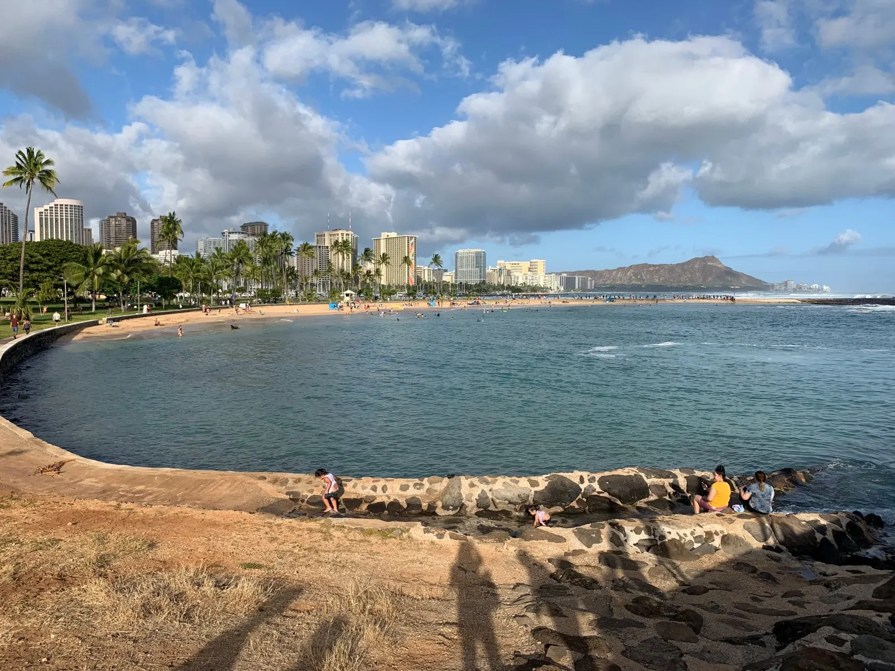
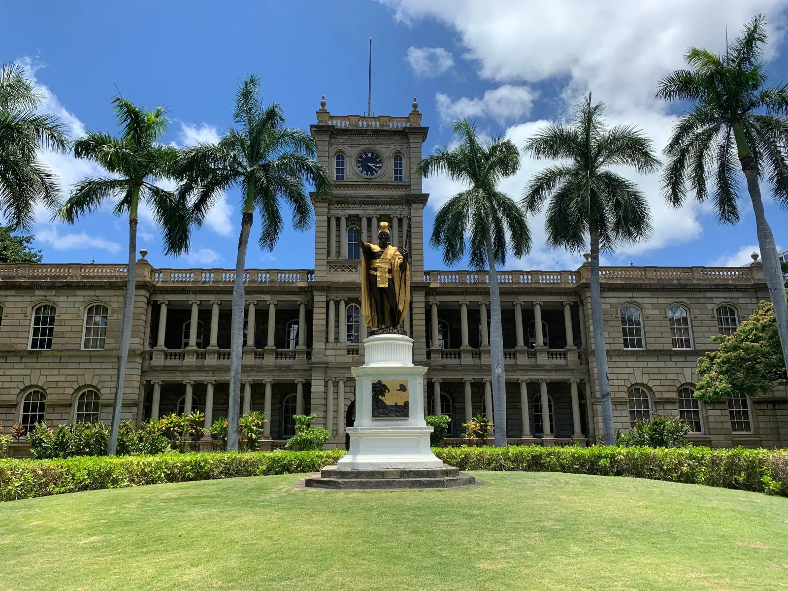
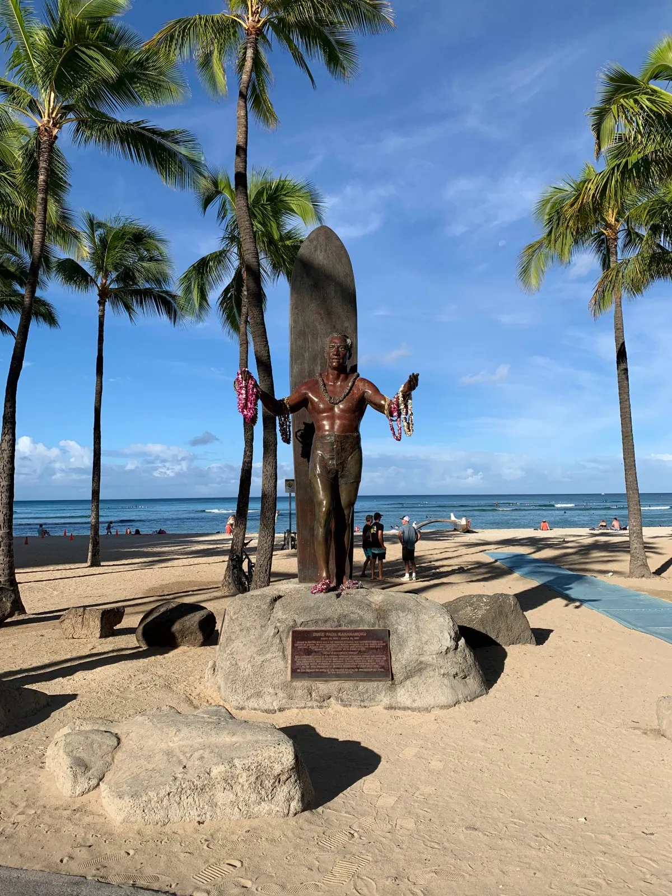
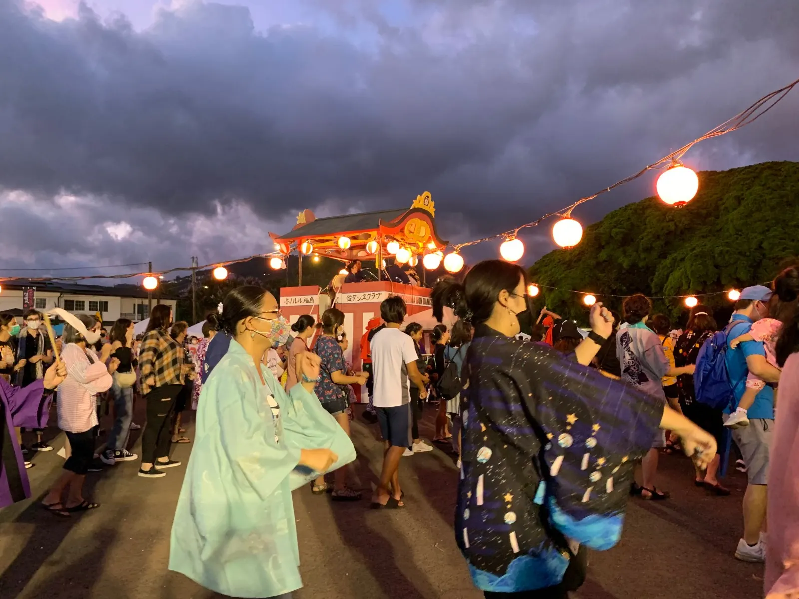
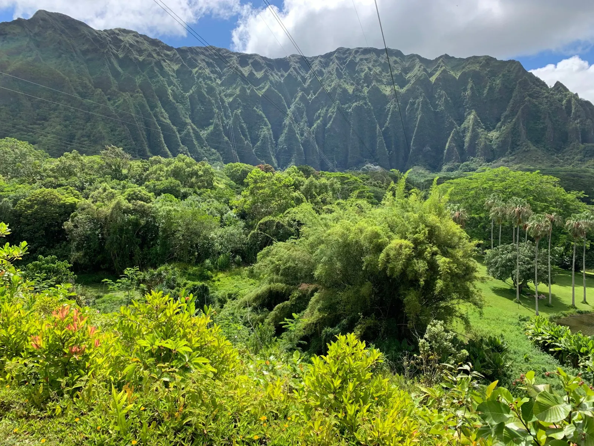
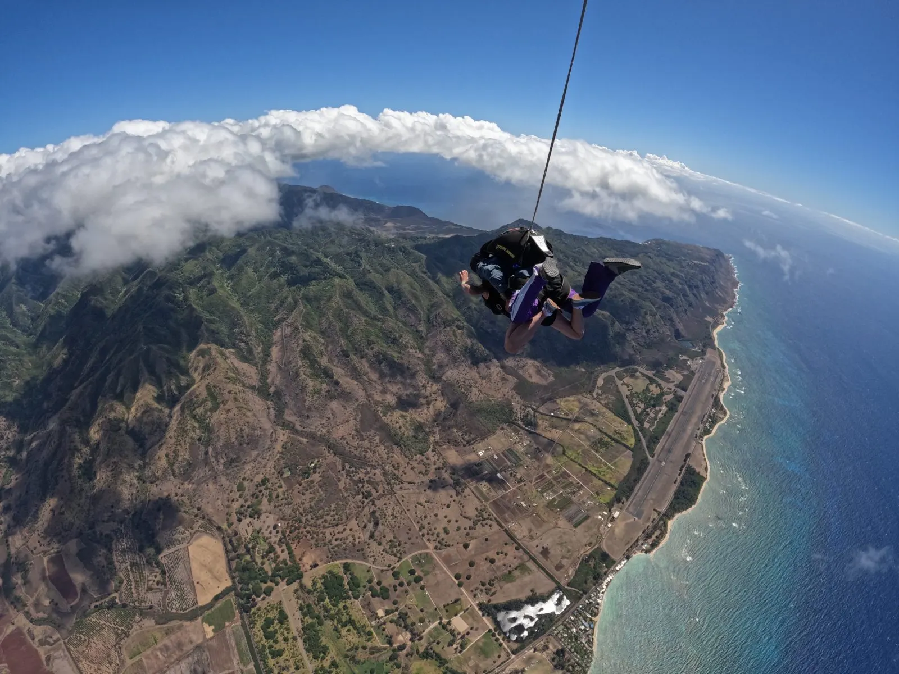
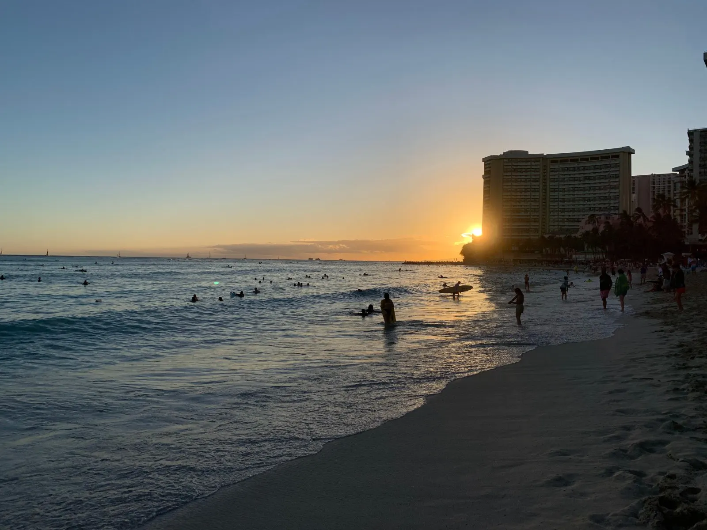

As I waited to board an early morning flight from Long Beach, California to Honolulu, I was feeling anxious.
Everyone around me seemed to be happy couples or families going on vacation or going home. In contrast, I didn’t know anyone on the island and was thinking to myself, What am I doing here? Why did I choose to buy a plane ticket to this new and unfamiliar city? Was I heading into paradise, or an unescapable island of loneliness? These questions grew louder as I settled into my aisle seat in a 3-person row next to an older Asian couple, with a mom and her three kids in the row in front of us and another Asian couple in the row across from me. I was going to be in Hawai’i for a period of time that seemed too long to not try to make friends but also too short to establish lasting relationships with the locals.
I am spending a summer in Hawai’i to work — to extern for and learn from a judge, I reminded myself, and as a side perk, I get to enjoy being in nature, relaxing at the beach, and rejuvenating after a tough year of law school. I was eager to live in Hawai’i with a curious and open attitude. I wanted to learn about their culture, values, and way of life — about their strong connection with nature and the land, their language, their food and traditions. I was excited to meet locals and experience the culture. The two months passed by quickly, but it was plenty of time to be educated, challenged, and delighted about Hawai’i’s unique culture, land, and history.

I arrived over Memorial Day weekend. Oahu did not give me the most impressive first impression. It was a cloudy day and quite humid – I immediately missed the dry California air. The island didn’t seem to look all that different from Southern California – there were still palm trees and downtown skyscrapers – except there were more hills that were green instead of brown and the street names and highway exits sounded Hawaiian (I noticed that many start with a K: Kapiolani, Kamehameha…) and the blue ocean was always in sight. I took an Uber to the Airbnb where I was staying, hidden behind a massage parlor. I walked 20 minutes to the nearest Target at the open-air Ala Moana shopping mall to get house supplies and groceries to survive the next day, not familiar with the bus system yet and sorely wishing I had a car as I lugged my two bags full of items back. I gawked at the prices of the groceries as I placed them into my cart (or took out upon seeing the price) — an $8 bag of Pink Lady apples, an $8 half-gallon milk carton, $5 “vegetarian fed” eggs.
My Airbnb host was the first to welcome me to the island. He was very generous and kind, offering me chicken soup, which was exactly what I needed after a 5½ hour flight. Throughout the summer he continued to feed me with potstickers, pizza, chow mein, and homemade recipes — chicken mole & enchiladas, ceviche, huevos rancheros. You’ll never starve in this house, he laughed. My first week I came down with a nasty flu (that somehow wasn’t COVID-19) and he brought me cough drops, a COVID testing kit, and chocolate pudding. He had moved here 16 years ago and strongly believed in finishing what you started and enjoying life to the full. Hawai’i is nice, though every day is the same, he said. Yet the next day, when we went on a hike, he said the views are what keeps him here — the beach and the weather never get old. I would probably feel the same way!
People here have a sense of humor that I appreciated. My first weekend I went with my Airbnb host and new friend Jen (who would become my best friend on the island) to a place in Kahuku on the North Shore, where there were stands selling fresh fruit and banana bread. We came for the fresh fruit — mango, pineapple, papaya — and lumpia, a slender, long, crunchy, and sweet Filipino fried roll consisting of a banana sprinkled with sugar and fried in a paper-thin flour wrapper. You want 10? the lady selling lumpia asked me hopefully, and then upon hearing my answer of just 2, seemed disappointed. 5? she counter-offered. We said sure. And what about these fruits? The orange ones are very good for your eyes! They weren’t annoying like street peddlers tend to be; they were kind and lighthearted and joked around. This is my son, the lady told us, as a guy who looked considerably older than what I would’ve guessed her son would be came out to greet us. Sometimes we call him son of a beach, she said, as they burst out in laughter. It took me a couple seconds to catch on, and then I was laughing with them too.
The cleaning lady at my Airbnb was sweet. She came to Hawai’i from China in 1986 and was very excited to speak Chinese with me. I’ll admit I didn’t understand a lot of what she said, but I listened intently and nodded at everything. She showed me adorable pictures of her 2-month old granddaughter. She also tried to set me up with guys who “made very good money.” That’s about when I would start to end the conversation.
In the office, the guy law clerks wore aloha shirts as their business casual, the gals more traditional business casual but with an emphasis on the casual. During our many two-hour lunches with the judge and law clerks, while munching on Trader Joe’s snacks (which they would bring back every time they went to the mainland since there are no Trader Joe’s on the island), we talked about everything from the judge’s illustrious career to baseball to Tom Cruise’s recent movie. I felt so fortunate to have had the opportunity to work with and get to know a really amazing, smart, and friendly group of people.
There are a lot of state holidays here. One afternoon we slipped away from the office briefly to see the lei-draping ceremony on King Kamehameha Day, where they draped several fresh leis over King Kamehameha’s statue and a small orchestra played traditional Hawaiian music.

The internship program I was a part of arranged a good amount of programming for us: we visited the Federal Detention Center (FDC), the state Supreme Court, the FBI, and the Sand Island Treatment Center, and heard from various judges. Even the prison seemed to exemplify the friendly “Aloha spirit” of Hawai’i. The inmates were treated relatively well — they get 3 meals a day, can take classes and do rehabilitation, and have access to the recreation room. Fights rarely happen and the officers get along pretty well with the inmates.
Places here close early. One time, after grabbing lunch with an intern I met at one of the programs, we went to a coffee shop in downtown Honolulu around 1:35pm only to find that they had closed at 1:30. The latest closing time I found for a coffee shop was 4:30, and that was rare. Maybe people want the afternoons off to go surfing or enjoy the beach? I know I would if I lived here.
I got to observe a judicial naturalization ceremony for the first time, presided by the judge I was interning for. Forty-five people were sworn in as American citizens that day. The new citizens pledged allegiance to the United States, heard a welcome message from President Biden, listened to Judge give a speech, recited the Pledge of Allegiance, and watched a music video of God Bless the USA. The judge noted that unlike the cases he usually deals with, where he has to assign a winner and a loser, here it’s a purely happy occasion, and thus one of his favorite parts about being a judge. It was amazing to watch such a milestone moment for these immigrants, and for the first time in a long time I felt proud to be an American.
Just like not everyone can surf in California, not everyone here knows how to surf, but a lot of people sure do. I took one surfing lesson before, but the windy conditions and big waves were not ideal. This time I wanted to learn to stand up, and the conditions looked promising. The waves at Waikiki Beach were perfect for learning how to surf — not too big but also decent — apparently it was pretty flat all week, and just started to pick up a little that day. We had 11-ft surfboards which are quite long, good for first-timers. We did our lesson with Micah, known as Mickeys Surf School on Yelp, because he had very good reviews. Apparently he’s famous in China and has taught celebrities like Hugh Jackman and Lauryn Hill. He turned out to be a really good instructor — he didn’t just tell us what to do, he told us why. He gave useful tips, like keep your gaze on the shore because where you look is where you will go, and keep your feet parallel facing the side of the board. It’s like riding a bike or driving a car — you wouldn’t ride a bike staring at the bike, or with your arm stuck out behind you, he explained. He showed me how to know when to stand up, which (spoiler alert) there’s no magic bullet solution to — it comes from years of trial and error. But he tried to get me to feel when it was the right time to go and the right time to stand up. When he pushed me, I would paddle 10 quick strokes and then start to stand up. He told us that on your own you would need to paddle 30-40 strokes from the point of first seeing the wave. A lot of it is about the timing.

The first 3 times I scrambled up in a panic and then fell off my board before I even had the chance to stand up. I paddled back out, frustrated each time. Then Micah did a wave with me, and finally I was able to experience what riding a wave felt like. I thought that the quicker I stood up the more likely I would stay on my board, but the opposite was true — it was standing up slowly that keeps you stabilized, and the wave will propel you forward. Surfing is much harder than the media makes it look — it’s hard to be in the right spot at the right time, and even after 45 years he doesn’t get it right every time! It requires a lot of patience. But those fleeting moments standing up on my board felt amazing and made the effort worthwhile — definitely hope to be out on the water again soon!
Hawai’i is home to more than a quarter of a million immigrants, and the two largest groups are Filipinos and Japanese. The first grocery store I went to was Don Quijote which, while the name doesn’t suggest it, is a large Japanese grocery store. The signs were in English and Japanese, and the snacks were very tempting — I treated myself to a bag of shrimp chips. I was excited by the sushi and poke section, and ate a lot of poke throughout the summer. Why buy any other meat when you can get ready-to-eat, fresh, delicious poke for about the same price? Groceries were so expensive that I was probably paying the same amount eating out anyways. Plus, I didn’t come all the way to Hawai’i to eat my same boring cooking.
Going to a Japanese bon dancing festival — the Mo’ili’ili Summer Fest — was a highlight. There were food trucks, tents selling Japanese street food like mochi, booths selling souvenirs like kimonos and jewelry, and bon dancing! After waiting 2 hours in line for a pork belly rice bowl, we watched a crowd of people and bon dancers dance in a large circle as two people sang and played traditional Japanese, banjo-like instruments. People went all out — several people were wearing kimonos, one lady had wooden shoes. Every dance was different, but the senior ladies knew them all by heart. After watching a few, we got up and joined the crowd. During the first dance, it took me a while to learn the two moves but once I did, I was just going through the motions for what felt like forever, and let the current of dancers take me along. I liked the later dances — they were more slow and graceful and consisted of longer sets of moves. We would follow the Japanese ladies in the center and awkwardly try to copy their graceful dance moves.

The Japanese food in Hawai’i is amazing. I had delicious ramen, spam musubi, and sushi. Hawai’i generally had a lot of ono (delicious!) food to offer. The traditional Hawaiian plate lunch consists of a main meat, served with two scoops of rice and macaroni salad. Some other common foods I enjoyed:
- Haupia: coconut pudding
- Poi: mashed taro root (can taste bland on its own, so I prefer to eat it with haupia)
- Lomi lomi salmon: salted tomato and salmon dish eaten with poi
- Kalua pork: smoked pork
- Lau lau: pork steamed in taro leaves
- Ulu: breadfruit
- Lilikoi: passionfruit
Stay here and you’ll soon become familiar with Hawaiian time. The bus taking us to the lu’au came 20 minutes late, and our surfing instructor was half an hour late because he couldn’t find parking. Restaurants took their time bringing us the check. I guess people take their time and enjoy life here!
People also don’t talk about directions in terms of NSWE. It took me a while to realize what the windward and leeward sides were referring to, and that North Shore isn’t exactly the north end of the island. Finally learning this was like a lightbulb going off.
I saw the “hang loose” shaka sign used a lot here, whether when greeting someone or posing for photos. It is often used to express friendship and goodwill.
A constant piece of advice I heard for mainlanders moving to Hawai’i is that it’s essential to realize that Hawaiian culture is different from anywhere else and to be willing to embrace the unique culture here. One local who came over from the mainland told me that one of the biggest culture shocks for her was finding that people don’t invite others into their homes; rather, they meet outside. It might be partly because their houses are smaller, or the weather outside is just so nice. But to a mainlander, it might appear that people are keeping you at a distance, which she found isn’t the case.
Some common Hawaiian phrases I learned (you can listen to the pronunciations and find more phrases here):
- Mahalo (ma-HA-lo): thank you
- Kapu: forbidden. If you see that something is “kapu,” you should not enter or practice that behavior as it is a serious violation.
- Aina: land
- Ahupua’a: means the stretch of land from the ocean to the mountains that used to represent a different community that native Hawaiian people lived in.
Hawai’i isn’t all paradise. Everything is infamously expensive — million-dollar houses are the baseline. There are still homeless people (though the government gives them decent food stamps and lets them pitch their tents by the beach); there is still gun violence (though Hawai’i has the lowest rate of gun deaths in the nation); people still struggle with mental health and depression, partly due to the financial pressure from high living costs; there is still crime. One early morning I was woken up by really loud noises, like someone repeatedly pounding something into the ground. I assumed it was construction work, but later found out that someone had broken into the massage parlor downstairs. There were police cars outside our place all morning.
There is still tension between locals and mainlanders. My Airbnb host more than once expressed his frustrations with mainland people disregarding the rules, parking in front of the “No parking” signs and hiking where they’re not supposed to. The famous 3922-step Stairway to Heaven hike had to be closed down because tourists kept going off the path and getting stranded and having to be rescued, and now the city plans to tear down the stairs. It’s a really sad thing, he said.
Many things are still done the old-fashioned way here. Several places only take cash, including the laundromat and the bus.
People still try to take advantage of others. The laundry place by my Airbnb had a no-nonsense lady who would call someone to take your laundry away if you didn’t pick it up within 5 minutes — unfortunately I saw that this was more than just a threat. I went to the Pho next door, and only after finishing my bowl of noodle soup did I realize that they had charged me for the large size — I had forgotten to mention the size when I ordered, and they hadn’t asked what size I wanted. One evening I was walking along the touristy Kalakaua Ave in Waikiki with my friend when we came across a sign saying, “Free caricatures.” Sure, why not? So we waited our turn and then sat in the chairs. The painter spoke fast and energetically into a microphone with a heavy Chinese accent as he was drawing. I’m very honest, he told us. Ironically, we learned a bit too late that the painting is only free until you want it in color — he ended up charging us $15 a head, so $30. It was a good painting though — he made my mouth really small (after saying he liked my smile) with large cheeks and a square face, with a strong Asian glow. As he drew he offered his “words of wisdom.” Caricatures enlarge the bad features, he said. If you draw pretty no one will want it. Pretty people all look alike — it’s the ugly people who look different and are interesting to draw. He told us that he chose to paint on the streets “for free” because he didn’t want the responsibility of pleasing people — he wanted to draw whatever he liked and however he pleased. We’re not customers, just models, as he described it.
Still, Hawai’i comes pretty close to paradise. Probably the thing I miss most is the weather. You can wear a tank top and shorts all day and night; you can come out of the ocean at night and not feel the slightest bit cold. I spent many mornings and evenings out on the lanai (porch) eating, reading, doing yoga, chatting with other Airbnb guests, and enjoying the cool breeze.
I certainly couldn’t get enough of the beach during my short stay here. One of the first things that drew me to Hawai’i was how clean and fresh the ocean air was, not at all fishy. The gorgeous clear light aqua blue and green beckoned me in. I loved the beauty of North Shore and the lushness of Kailua and the calm of Ala Moana. I fully embraced Waikiki with all of its tropical, touristy vibes. I embraced the warm sun on my face and the cool water on my feet, the palm trees and mountain peaks in the distance by the shore. I embraced the shops selling acai bowls and shave ice, and ocean view restaurants with calm Hawaiian music catered to tourists like me yearning for the “Hawaiian experience.” I embraced the cool breeze, the occasional drizzle, and Kalakaua Ave with designer retailers like Kate Spade and Louis Vuitton, full of tourists having a good time, enjoying life to the full.


My last weekend on Oahu I went skydiving. I had all but given up on the prospect of it after the person I was supposed to go with bailed, but at the last minute Jen came through. Jen can be spontaneous at times, and that day it worked out perfectly.
My biggest fear about skydiving had been the stomach dropping feeling from free fall, like when you’re on a rollercoaster, but after doing some research I found that it doesn’t feel like that at all. There was so much wind pressing in on you from all sides that it didn’t really feel like free fall. The scariest part was probably signing the liability waiver that acknowledges you could die that day and gives up your right to sue the skydiving company. But it was the perfect day — blue skies and few clouds — and my instructor had already done 6 jumps that day. I reassured myself everything would be fine.
We got into a small plane holding about 10 of us. The 15-minute ride up was relatively pleasant (though of course, I was starting to feel the adrenaline). Occasionally they would open the door and refreshing cool air would rush in. It was only when my instructor started tightening my harness and the door was opened for us to jump out that I started tensing up. Relax. Take deep breaths. My instructor spoke soothingly into my ear, through the rumbling noise of the plane. I tried to relax. He reminded me what to do — to keep my head up, curve my chest upwards, and kick back my legs (like a banana). I went third, and I’m so glad that my instructor did the countdown and jumped for us.
The whole thing happened incredibly fast. I felt my stomach drop for maybe 2 seconds, then the wind was blowing so hard in all directions, but we were still free falling. The free fall lasted a minute, though it had felt like 10 seconds to me — I only realized later that all that time falling through the wind was free fall. I had to close my mouth because so much air was being thrust into it, like a river of air. I had purchased photos, and the lady taking the photos was somehow right next to us — she smiled at me and held my hand tightly, which was a comfort during the free fall. After a few more moments, my instructor tapped my shoulder three times, signaling me to extend my arms out and embrace the wind. A few moments later the parachute was up, the wind quieted down, and I could relax. It felt surreal – we were so high up! The view was incredible. We could see all of North Shore, and the vast, blue ocean. He turned the parachute round and round, giving me a 360º view of North Shore.

The skydiving itself wasn’t a life-changing experience for me — I think the hardest part for me was making the decision to do it. But what was significant was that this moment was just one part, the culmination, of a memorable, rollercoaster ride of a summer — a summer where I experienced my first date and a heartbreak, but also gorgeous sunrises and sunsets, beautiful lush hikes, and mai tais on the beach with new friends and old. I’m grateful for every challenging, illuminating, and beautiful moment, and for the people who became my ohana during my short time here.
All the turns left me and Jen feeling motion sick, so we sat on a bench for a while afterwards, trying to process what just happened. After we recovered, we got garlic shrimp at North Shore, then went back to Waikiki Beach where I took my last ocean swim, far out to where the surfers were catching the waves, where my feet could still touch the sandy floor, and where I could see the sun passing behind the clouds, emanating a brilliant glow before finally setting behind the mountains. I embraced the warmth of the seawater, the cool feel on my skin, the gorgeous view, taking it all in for the last time. I was really going to miss this.

We got soft serve ice cream at the Royal Hawaiian Center food court, had drinks at Waikiki sky bar overlooking the city, and returned to Buho Cantina for drinks and dancing. Still processing the day’s events, we cheered to trying new and bold things together, new firsts, and celebrating 25. Even if two people bail on skydiving, that won’t stop me — who’s to stop me from pursuing my dreams?! The three ladies sitting next to me on the plane were skydiving for freedom too — the one sitting next to me had just gone through a divorce. For us, skydiving represented bold freedom, fearless independence, and new beginnings.
Hawaii feels like a dream.